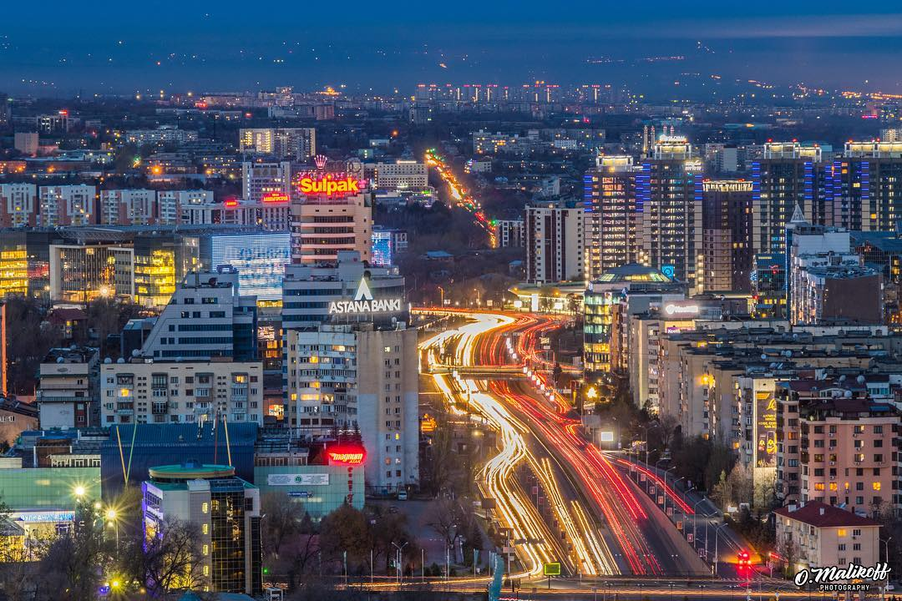

"You should try to be less outdoors during such periods (smog). If you go out, use respirators, moist masks. If possible, go outside the city. Keep windows closed.", - recommends the representative of the medical center Rosa Bakenova.But the chief allergist in Almaty is not very optimistic about wearing masks. "Masks can be worn, but they do not help. Wearing masks is unlikely to have any effect other than psychological. In our practice, patients used nasal filters, special sprays and even respirators, which, of course, are much more effective at trapping nanoparticles," says chief allergist of Almaty. A nasal spray is a film in the nose where dust adheres. A person calmly breathes with a nose in which there is a film, but then, when blown out, all dust and other dirty substances come out from the outside. The professor also recommends refraining from frequent walks in the city center, where there is a large congestion of cars, and tells you how to protect yourself while in a traffic jam. "It is undesirable to run around the city center. If I am in a traffic jam, I turn on the internal circulation in the air conditioner in the car so that the air does not penetrate outside, but circulates inside. This saves me from unnecessary emissions, because traffic jams are the concentration of emissions," states Nurpeisov
How to get rid of smog?
Individual action to protect yourself from smog may not be sufficient if there is no global change in a polluted city. At the city level, the fight against smog consists in the adoption of various legislative measures that oblige industrial enterprises to strictly control the substances they emit into the atmosphere, to reduce the total emissions from cars, by limiting their presence in the city, calling for the abandonment of personal vehicles. Today, the main methods for reducing atmospheric pollution, including acid-forming emissions, are the development and implementation of various treatment facilities and legal protection of the atmosphere. Research is underway to reduce pollution from vehicle exhaust gases. It is promising to replace gasoline in cars with other types of fuel (for example, a mixture of alcohols), the use of gas-cylinder vehicles using natural gas and electric vehicles.Dust collectors can be used to reduce the proportion of smog generated by industry by equipping enterprises with them. Effective use of special filters
What can YOU do?
- Drive less. Vehicles that run only on gasoline produce nitrogen dioxide as a byproduct of driving and idling, so one easy way to cut back on emissions is to drive less. Try walking, biking, or taking public transit instead.
- Buy local. When you buy products that are made locally, it cuts down on the cost of transport which reduces emissions. Local farmers' markets and grocery stores can help you determine where items were produced.
- Don't support organizations that have poor environmental practices. By not supporting commerce from these companies, you raise awareness of the problem.
- Promote your stance. Don't be afraid to tell people your opinion on the issue, and what you are doing to help solve it. You can do this by speaking to those closest to you (family, friends, co-workers) or reach more people through social media (Facebook, Twitter, YouTube).